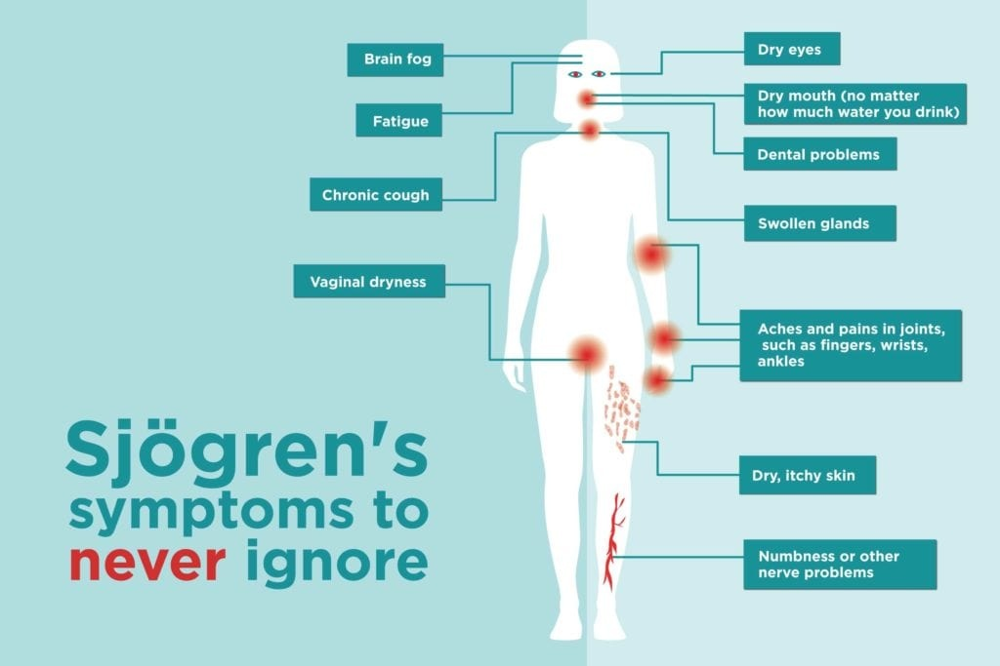

Sjogrens syndrome

SYMPTOMS:
- Dry Eyes
-
Dry Mouth
-
Joint pain, swelling and stiffness
-
Swollen salivary glands — particularly the set located behind your jaw and in front of your ears
-
Skin rashes or dry skin
-
Vaginal dryness
-
Persistent dry cough
-
Prolonged fatigue
CAUSES:
In Sjogren's syndrome, your immune system first targets the glands that make tears and saliva. But it can also damage other parts of your body, such as:
- Joints
-
Thyroid
-
Kidneys
-
Liver
-
Lungs
-
Skin
-
Nerves
DIAGNOSIS:
- The disorder is often diagnosed by means of a thorough patient history and physical examination. Recent advances in endoscopic equipment make the diagnosis somewhat easier.